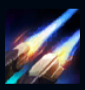
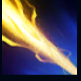
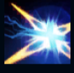
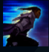
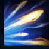

Lucian
| Lucian The Purifier | |
|---|---|
| Release date | 22.08.2013 |
| Class | Marksman |
| Positions | Bottom, Top, Middle |
| Resource | Mana |
| Range type | Ranged |
| Adaptive type | Physical |
| Base statistics | |||
| Health | 571 – 2033 | Mana | 348.88 – 994.88 |
| Health regen. | 3.75 – 14.8 |
Mana regen. | 8.176 – 20.08 |
| Armor | 28 – 79 | Attack damage | 64 – 103.1 |
| Magic resist. | 30 – 38.5 | Crit. damage | 175% |
| Move. speed | 335 | Attack range | 500 |
Lucian este o Santinelă a Luminii și un vânător neobosit al spiritelor fără de moarte, urmărindu-le și anihilându-le cu pistoalele sale gemene. După ce spectrul numit Thresh i-a ucis soția, Lucian a jurat să se răzbune – dar, chiar și după ce a readus-o la viață, furia îi mistuie în continuare sufletul. Nemilos și neabătut, Lucian face tot ce îi stă în putință pentru a-i proteja pe muritori de ororile zămislite de Negura Întunecată. |  |
SCÂNTEIERE Când Lucian folosește o abilitate, următorul lui atac devine o lovitură dublă. |
||
|---|---|---|---|---|
 |
RAZĂ DE LUMINĂ Lucian trage cu un fulger de lumină printr-o țintă. |
|||
 |
FLACĂRĂ MISTUITOARE Lucian lansează un proiectil care explodează în formă de stea, însemnând și dezvăluind pentru scurt timp inamicii. Când atacă inamicii însemnați, primește un bonus la viteza de mișcare. |
|||
|  |
URMĂRIRE NEÎNCETATĂ Lucian aleargă rapid pe o distanță scurtă. Atacurile care beneficiază de ''Scânteiere'' reduc timpul de reactivare al ''Urmăririi neîncetate''. |
|||
 |
PURIFICARE Lucian dezlănțuie un torent de proiectile din armele sale. |